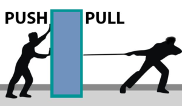
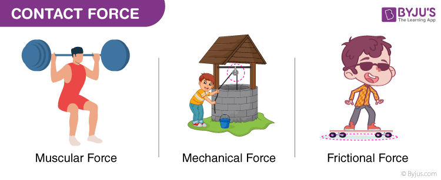
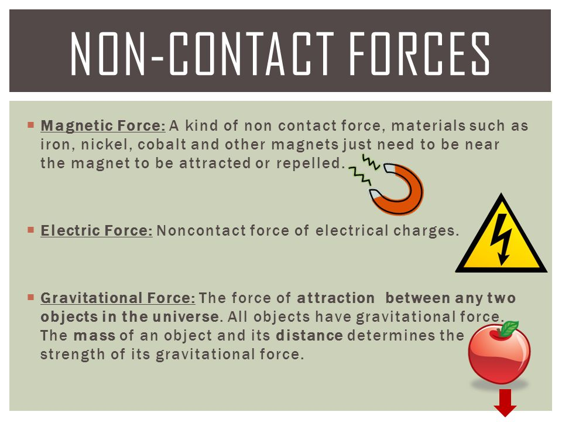
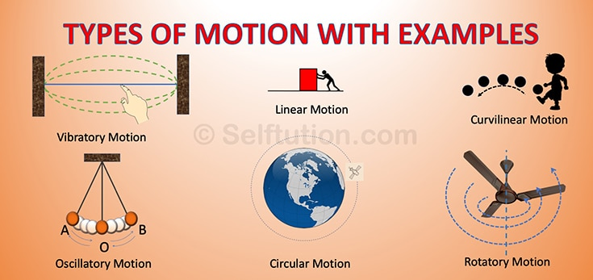

Physics Website
Force: Push or pull is known as force. Push and pull come from the objects interacting with one another
SI UNIT: kgm/s^2 or Newton
What are the Effects of Force?
In physics, motion is defined as the change in position with respect to time. In simpler words, motion refers to the movement of a body. Typically, motion can either be described as:
- Change in speed
- Change in direction
The Force has different effects and here are some of them.
- Force can make a body that is at rest to move.
- It can stop a moving body or slow it down.
- It can accelerate the speed of a moving body.
- It can also change the direction of a moving body along with its shape and size.

Types of Force:
Force is a physical cause that can change the state of motion or the dimensions of an object.
There are two types of forces based on their applications:
Contact Force
Non-Contact Force
Contact forces:
Forces that act on a body either directly or through a medium are called contact forces.
Examples of contact forces are:
Muscular Force
Mechanical Force
Frictional Force
We can make use of the muscular force of animals like bullocks, horses, and camels to get the activities done. The frictional force is another type of contact force, which acts between a pair of a surface in contact and tends to oppose the motion of one surface over the other.

Non Contact Forces:
Forces that act through spaces without making direct contact with the body are called non-contact forces.
Examples of non-contact forces are:
Gravitational Force
Electrostatic Force
Magnetic Force
The force exerted by a magnet on other magnets is called magnetic force. Magnetic force and electrostatic force act on an object from a distance, that’s the reason they are non-contact forces. The strength of gravity is an attractive force that is exerted by the Earth on objects, which make them fall to the land. The weight of a body is the force that is pulled by the earth towards the center.

Types of motion:
Linear Motion: Rectilinear Motion – The path of the motion is a straight line.
Curvilinear Motion – The path of the motion is curved.
A few examples of linear motion are the motion of the train, football, the motion of a car on the road, etc.
Rotatory Motion:
Rotatory motion is the motion that occurs when a body rotates on its own axis. A few examples of the rotatory motion are as follows:
The motion of the earth about its own axis around the sun is an example of rotary motion.
driving a car, the motion of wheels and the steering wheel about its own axis is an example of rotatory motion.
Oscillatory Motion:
Oscillatory motion is the motion of a body about its mean position. A few examples of oscillatory motion are
When a child on a swing is pushed, the swing moves to and fro about its mean position.
The pendulum of a clock exhibits oscillatory motion as it moves to and fro about its mean position.
The string of the guitar when strummed moves to and fro by its mean position resulting in an oscillatory motion

Speed and Velocity:
Speed is defined as distance covered in unit time.
Velocity is defined as displacement in unit time.
Speed:
Speed is distinguished into two parts ,Uniform speed and non uniform speed
| Cars |
Distance(In metres) |
Time(In seconds) |
| Car A |
10metres |
5seconds |
| Car B |
20metres |
10seconds |
| Car C |
17metres |
10seconds |
| Car D |
32metres |
26seconds |
You can see here that Car A and B are moving in uniform motion whereas Car C and D are moving in non uniform motion.
Speed = Distance / Time
Velocity:
Velocity is distinguished into two parts ,Uniform velocity and non uniform velocity
| Cars |
Distance(In metres) |
Time(In seconds) |
| Car A |
10metres |
5seconds |
| Car B |
20metres |
10seconds |
| Car C |
17metres |
10seconds |
| Car D |
32metres |
26seconds |
You can see here that Car A and B are moving in uniform velocity whereas Car C and D are moving in non uniform velocity.
Average Velocity=Initial Velocity+Final Velocity/Time
Kavya Marathe Physics Website